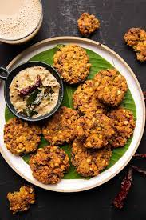

Masala (Dal) Vada
Masala Vada, also known as dal vada or paruppu vadai, is a
delicious crispy and spicy delicacy for everyone. Contrary to the traditionally eaten medu
vada (medu = soft), masala vada uses a less finely ground dal to give a crunchier texture
This South Indian snack originated in Tamil Nadu, and uses a variety of spices such as ginger, curry leaves,
and hot peppers to add to its spicy taste. You can adjust the amount of hot peppers
to fit your spice tolerance. Since the chana dal is typically not fully ground,
this vada can be a little hard on your teeth. If you need it softer, you can ground
your chana dal more as needed.
Ingredients
To soak chana dal
- 1/2 C chana dal
- 1 C water
For the vada batter
- 1/3 to 1/2 C chopped onions
- 1/2 teaspoon of minced ginger
- 1/2 to 1 teaspoon chopped green chillies
- 10 to 12 curry leaves
- 2 tablespoons chopped coriander leaves
- 1/2 teaspoon rock salt, or any salt for taste
- About 1 C oil or your choice for frying
Steps
Soaking Chana Dal
- Rinse you chana dal in water a few times until the water is clear.
- Soak the dal in 1 C water for about 2 hours.
- Drain your soaked lentils well so there is no water left.
Making the Masala Vada Batter
- Blend your previously soaked chana dal until it reaches a coarse texture.
You should not need to add any water, and it is okay to have whole dal bits.
- If you're dal will not grind at all, you can add 1 tablespoon to start.
Keep in mind that excess moisture makes it difficult shape later on,
so avoid adding too much water.
- Transfer you chana dal to a large bowl. Remove any excess moisture as needed.
- Add the chopped onions, green chilies, curry leaves, chopped coriander,
and chopped ginger.
- Add salt and mix everything well so it is evenly distributed across the batter.
- Shape the mixture into small balls of the mixture, keeping the size and shape uniform.
- Slightly flatten them and place them on a tray.
Frying the Batter
- Heat your oil on a pan or similar cookware.
- You can place a wooden spoon in the oil to check if the oil is hot
enough. If bubbles form around the spoon, it is ready for frying.
- Gently add your vada into the batter, and fry each side for about 3-5 minutes.
Turn the vada over once and fry the other side for the same amount of time.
- Fry the vada until it is brown and crisp. If the onions appear golden,
this is a good indication that they are done.
- Place your finished vada on a papertowel to absorb excess oil.
- Continue to fry the remainder of your vada.
- Serve on a plate and enjoy! This can be eating with cocount or
tomato chutney, or on its own!